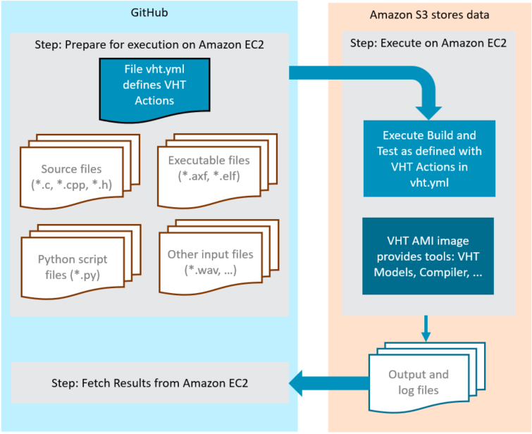

|
Virtual Hardware
Version 0.2 - beta
Infrastructure Service and Tool Integration
|


|
|
Virtual Hardware
Version 0.2 - beta
Infrastructure Service and Tool Integration
|
|
GitHub Actions help you automate tasks within your software development life cycle. GitHub Actions are event-driven, meaning that you can run a series of commands after a specified event has occurred. For example, every time someone commits a push or creates a pull request for a repository, you can automatically run the Arm VHT Services that execute automated build or test scripts. Refer to Introduction to GitHub Actions for information about the components of GitHub Actions.
There are several different ways to execute GitHub Actions:
The approach that you should choose depends on your CI/CD requirements.
The following steps explain how to use self-hosted GitHub runners with AWS Marketplace: Arm Virtual Hardware.
From your github repository on github.com, go to Settings > Actions > Runners > New self-hosted runner. Make sure you have selected "Operating System: Linux x86" and follow the instructions of Setup AWS EC2 Instance.
Before you start with the following steps, make sure you created an EC2 instance on your AWS account. For instructions, see: Launch through EC2.
Follow these steps on SSH:
sudo -u ubuntu bash && cd /home/ubuntucurl -o actions-runner-linux-x64-2.283.3.tar.gz -L https://github.com/actions/runner/releases/download/v2.283.3/actions-runner-linux-x64-2.283.3.tar.gztar xzf ./actions-runner-linux-x64-2.283.3.tar.gz./config.sh --url https://github.com/myuser/myproject --token ABCDEFGHIJKLMNOP./run.shUsing the github runner is very simple. All jobs in the workflow file that should be executed on the EC2 instance via the runner, need to have the runs-on parameter added:
runs-on: self-hosted
This is a sample workflow for projects that run on an self-hosted runner:
Once this steps are completed, any commit or pull request to the repository should trigger the CI workflow that you have defined. Make sure that the EC2 instance is up and in running state, for the github runner to be available to your actions.
The following steps explain how to use GitHub-hosted runners with AWS Marketplace: Arm Virtual Hardware. The github-hosted runner will run the action on an github-hosted VM instance. The VHT-AMI action controls the remote execution of builds and tests on Arm Virtual Hardware. The plugin manages connection, upload and execution of a test suite on Amazon EC2 Linux instance that runs an Arm VHT AMI. It also provides run-control of the EC2 instance itself, starting and stopping on demand.

The VHT-AMI action receives a *.tar input file (vht_in) that contains the vht.yml control file. The vht.yml is the run control commands for the AMI and defines the execution of build scripts or test runs. Once the AMI run control commands are complete the results are returned as *.tar file to the GitHub runner.
The file action.yml defines the parameters for the GitHub action.
The following AWS account requirements are needed to run VHT-AMI action:
1. Create PassRole policy for VHT-AMI
You need to create a PassRole IAM policy to be attached to our IAM User with the following content. You can name it vht-passrole.
More information on the AWS documentation: Create IAM Policy
2. Create Identity and Access Management (IAM) User
You have to create an IAM User to limit resource permission to your CI. In addition, the IAM User provides fixed AWS Access Key Id and AWS Secret access key values.
Make notes of the the users credentials as you will need them in futures steps of the setup.
For this user, you have to add the following policies:
You also need to add the following Permission boundary:
The user can be called vht.
More information on the AWS documentation: Create IAM User
3. Create an IAM Role For EC2 Services
You have to create IAM Role to be attached to the EC2 Instances. This role gives EC2 Instances access to S3 buckets and SSM services. For this role, you have to add the following policies:
You also need to add the following Permission boundary:
More information on the AWS documentation: Create IAM Role For Service
Make sure you created an EC2 instance on your AWS account. For instructions, see: Launch through EC2. Once created you need to make notes of the Instance ID, for later reference. You can stop the machine once it has reached running state. The plugin will start the machine on demand.
The IAM role created in the previous step, can either be specified on launch or it is added from the EC2 management. Attach it anytime using Actions - Security - Modify IAM role from the menu.
Use the AWS console to create an S3 storage with default options. Note the name to specify it the the parameters of the actions afterwards.
Add the information from the last to steps to the secrets of your github repository. Secrets cannot be reviewed and are a secure way of providing the access credentials to the plugin.
From your github repository on github.com, go to Settings > Secrets > Actions > New repository secret.
We recommend to add the Instance ID of the EC2 instance, and the IAM Access key pair into secrets with the following names: AWS_INSTANCE_ID AWS_ACCESS_KEY AWS_ACCESS_KEY_SECRET
More information on github documentation: Creating encrypted secrets for a repository
The basic idea of creating a github-hosted CI flow is to run steps on the github VM instance - except build and execution of test cases. The test suite contains of a collection of files that are required on the VHT instance on AWS and a yaml-based inventory file, that includes instructions. This file is called vht.yml. It will mark the root of a folder used to stage a test suite on the Github VM.
A complete example workflow is found in the example hosted on: https://github.com/ARM-software/VHT-TFLmicrospeech
Steps before the actual execution should copy every file required to staging folder. It will then be passed in the vht_in parameter. File and path references in the vht.yml should be relative to the root of this folder, where also the vht.yml needs to be placed.
Refer to https://github.com/ARM-software/VHT-TFLmicrospeech/blob/main/.github/workflows/virtual_hardware_gh.yml for some detailed example.
The vht.yml file describes the content of the test suite, assets, build and test run instructions. It is located in the root of the folder specified in vht_in. Its format is YAML (https://yaml.org/spec/) with the following structure:
The following tables describe the different sections of the vht.yml file.
| suite: | Starts the declaration of a test suite |
|---|---|
name: | Name of the test suite |
model: | Executable name of the VHT simulation model used. |
configuration: | Configuration file for the VHT simulation model. |
pre: | Execute command on shell before executing any builds: or tests:. |
post: | Execute command on shell after executing any builds: or tests:. |
| builds: | Starts a list of build declarations. |
|---|---|
"<value>": | Name of the build declaration. |
shell: | Execute command on shell that builds the executable file. |
pre: | Execute command on shell before the build shell: command. |
post: | Execute command on shell after the build shell: command. |
| tests: | Starts a list of test declarations. |
|---|---|
"<value>": | Name of the test declaration. |
executable: | Executable file in ELF format to be executed on the VHT simulation model. |
arguments: | Additional arguments passed to the VHT simulation model. |
timeout: | Optional timeout for test execution. |
pre: | Execute command on shell before starting the executable:. |
post: | Execute command on shell after completing the executable:. |
You can now the VHT-AMI action by referencing the v1 branch as shown below:
The VHT-AMI action is controlled using the following parameters.
| Keyword | Description |
|---|---|
vht_in: | Folder to the staged files. The vht.yml file should be provided in the root folder. |
ec2_instance_id: | EC2 Instance ID of the AMI stored as GitHub secret secrets.AWS_INSTANCE_ID. |
ec2_instance_type: | EC2 Instance Type that will be assign to-be-created EC2 Instance. Required when no instance id supplied. |
ec2_security_group_id: | EC2 Security Group that will be assign a to-be-created EC2 Instance. Required when no instance id supplied. |
iam_profile: | IAM Profile to be assigned a to-be-created EC2 Instance. |
subnet_id: | Subnet ID that will be assign a to-be-created EC2 Instance. |
terminate_ec2_instance: | Terminate EC2 Instance when the build is finished. Default=false |
vht_ami_version: | VHT AMI Version to be used. This field is overwritten if vht_ami_id field is present. |
vht_ami_id: | VHT AMI ID when the EC2 instance has been created. This fields overwrites vht_ami_version. |
access_key_id: | Access key to AMI stored as GitHub secret secrets.AWS_ACCESS_KEY_ID. |
secret_key_id: | Secret key to AMI stored as GitHub secret secrets.AWS_SECRET_KEY. |
aws_region: | Name of the region where your EC2 and S3 instances are located. |
s3_bucket_name: | Name of the temporary storage an S3 bucket is used. |